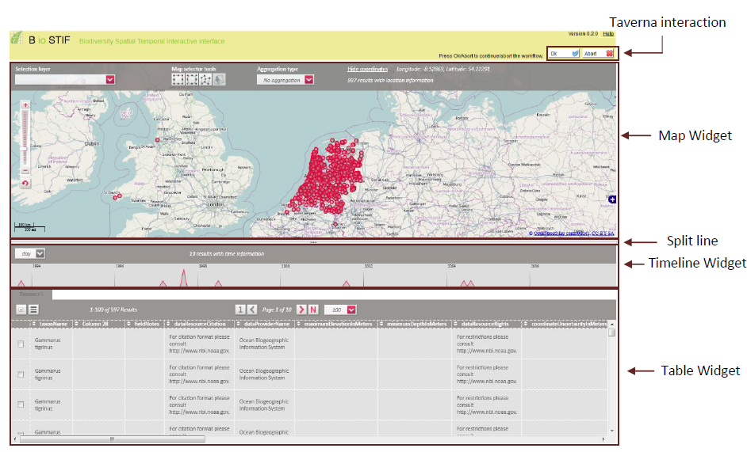
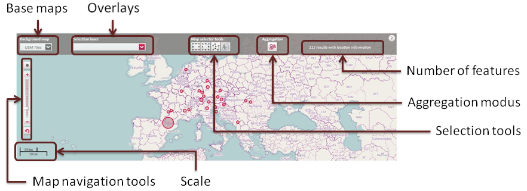
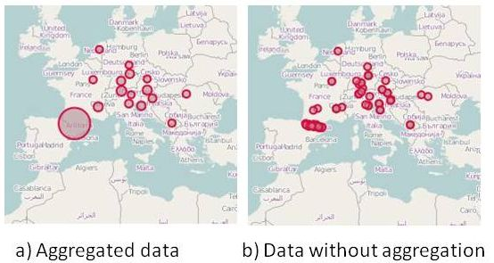
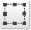
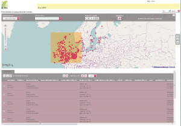
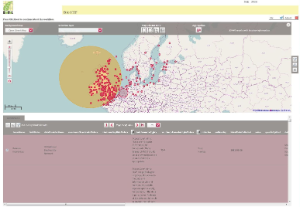
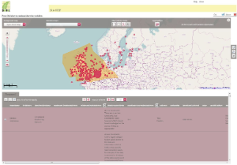
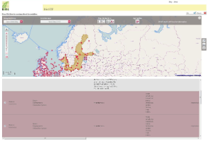
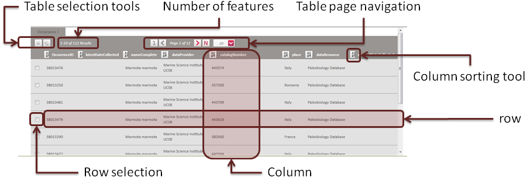
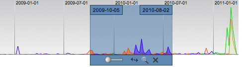

BioSTIF is a web map application designed for the interactive visualisation of spatio-temporal data. It allows the comparison of different data sources having at least one spatial attribute with a geographic coordinate (Point). Data can be manipulated using geospatial, temporal or table-based filters.
BioSTIF can be started from a web browser as stand alone application, passing the data to be visualised as URL parameters or within a Taverna workflow as an interaction service. Below you will find the configuration and installation prerequisites for both options.
1. Web Interface
1.2 System composition / Overview
The image below shows how the current system is composed. The interactive components are also called "widgets".
The Map Widget and the Table Widget are the geographical and tabular representation of the data loaded. A Time line Widget appears if the data contain enough temporal data. A Split line allows the user to resize the widgets on demand.

1.2.1 Taverna toolbar
When Starting BioSTIF from Taverna at the top of the application there are two buttons for the interaction with taverna. On OK the result of selection/filtering or the same urls with which BioSTIF was called are returned to Taverna through the interaction service as output ports. Pressing abort, caused the stop the running workflow.
1.2.2 Map Widget
The central component of BioSTIF is the map. Generally, it works like better-known map services on the web, such as Google Maps. It supports zooming as well as drag and drop for navigation.
The map widget consists of a geographical map, which is overlaid with bubble glyphs. The glyphs are circles, with each of the glyphs represents one or more items of the dataset. We chose a circle representation on the map to display data densities instead of, for instance, a heat map, in order to allow multiple query results to be shown together, and to make every data item individually accessible through its graphical representation.

In addition, to avoid visual clutter, we require that the glyphs not overlap each other. To achieve this goal, we merge circles based on their size, distances, and the current zoom level in an iterative process.
The navigation through the map is similar to known tools like Google Maps. With the navigation tools the user can zoom in and out, panning can be achieved by dragging the mouse over the map. At the bottom of the map a scale informs the user about the current resolution. Clicking on the button restore original view (the map section the user saw at the start). Clicking on the button a marker with the current user location will be visualized.
For the background map the user can switch among different base maps. In dependence of the usage agreements maps from providers like google and bing can be selected. The overlays or selection layers are a compilation of wms layers that can be loaded upon the base map and below the bubble glyphs. If one overlay was selected, the user can perform a spatial selection of the bubble glyphs by selecting (clicking) on one or more features of the overlay layer, after switching on the spatial selection tool.
The number of features on the right side of the map toolbar shows how many objects containing valis spatial references where loaded. This number is differernt from the number of glyphs, if the Aggregation modus is on (default). The aggregation modus can be changed by clicking on the icon in the toolbar. Note: at the moment a new aggregation is computed each time the aggregation button is pressed. This mey result in a processing step (on the client) which can keep the browser bussy, in dependence how many objects are loaded. This is a performance issue we are working on.
1.2.2.1 Visualization of Spatial Data
Dynamic aggregation of data
To avoid a confusingly large number of dots for large results or datasets and to reduce the amount of feature to be handled by OpenLayers, the interface automatically aggregates points depending on the zoom level. To ensure non-overlapping circles, we perform a variant of the agglomerative clustering algorithm. The user can change the aggregation modus by switching the button Aggregation on the map toolbar .

The image shows species occurrences for the specie Marmota marmota (data from GBIF) in Europe. (a) 112 occurrences are merged to 16 non-overlapping circles. The composition of circles reflects that there were a lot of observations between France and Spain (bigger circle). (b) Each circle with minimum radius rmin represents one incident. The high degree of overplotting makes it hard to access each circle individually.
Placename tag cloud (to be added to BioSTIF)
Each of the map’s circles is associated with a tag cloud of the most frequent place names, including their quantity and whether they were provided by the given data. The size of the literals of a place name is proportional to its quantity in the corresponding circle.
{kind=link}
This feature enables on-demand labelling of points and also provides a preview of how a glyph arising from agglomeration would split if zoomed in. If the data offers different levels of detail for a place, we choose the label dependent on the current zoom level. We distinguish four semantic levels: country, region (which can be, for instance, a state or a countryside), city, and borough (which can be a district, specific place or an address of the given city).
Selection mechanisms
Several selection tools on the map and on the timeline allow drill-down in time and space. The map features selectors for polygons, circles, and features comming from a selected overlay layer. They are wms layer reflecting data as political boundaries, world seas, etc..
{kind=link}
The timeline allows selections of points in time and durations. Durations can be fuzzy. It’s also possible to drag a selection on the timeline, during which the dots on the map change in real time.
Object description as PopUp window.
When the user clicks with the mouse over a glyph a Pop-Box opens. The number of results is shown next to the name of the location (found in the data as place names). If more than one location is displayed, click at the icon beneath the desired location to show only the objects with reference to this place. At the top of the Box two arrows allow to navigate back and forward through the list of objects. If the user clicks on another glyph the popup will be automatically closed and a new popup showing the information of the recently clicked object will be shown.
Object selection
If the user clicks on another glyoh holding the "Strg" key pressed, both objects will be selected. If a user wants to deselect a glyph it must click again on it holding the "Strg" key pressed.
Another form of multiselection is provided by the Selection tools. The user can click one of the following buttons:
- Click  to draw a square around desired locations.
 - Click to draw a circle around desired locations.
 - Click to
draw a random area around desired locations. Click a place on the card
to begin drawing the area. Then drag the mouse to the next corner of the
area and click again. When you have completed the area, double-click
the card

Notes: Selection areas can be changed by clicking on the area holding the mouse left key pressed and dragging the selection through the map. If the user keeps the "Strg" key pressed another selection can be done. The selection tool must be clicked again. - Click to
select all locations within a WMS border. (You need to select an
overlay first, else the button is deactivated). All objects within the
geographc polygon will be selected.

Filtering
When objects are selected a filter toolbar appears on the right side of the map widget. The user can choose the following buttons:
- Click on : All selected objects are filtered, that means all views will show only the objects within the selection. The selection forms are deleted and all the objects appear as not selected.
- Click on produces an inverse filtering, that means all the objects that were not selected are kept. The selected objects will not be shown in any view.
- Click on to undo the last filtering or inverse filtering. All the objects are restored in all views. Note at the moment only 1-step undo is implemented.
- Click on to cancel all selections.
Concurrent datasets
An advanced feature of this site is concurrent searching. Using this mode allows combining up to four (limited for clearness) searches. The user has the full possibilities given for a single search. This includes selection editing and display of result sets.
{kind=link}
Table Widget
The third method for displaying the result set is a table.

The table also interacts with the timeline (if visiblie). If a duration is selected, the items will be highlighted.
A temporary or spatial selection causes highlighting of a rows’s border and the row selection check box is activated. Additionally, the table can be used for the selection and the de-selection of single elements. Via this feature, the user is able to adapt a selection by adding or deleting specific elements. Finally, the user can switch the display mode of the table, so that only selected items are shown, which simplifies the browsing through the final selection.
Time line Widget (to be added to BioSTIF)
Since the timeline is a rarely used control in web applications, it wasn’t possible to reuse existing GUI concepts. The timeline is primarily used for drill-downs in time. Another functionality is the display of individual datasets for a given point in time. This is done via a simple mouse over.
{kind=link}
Fixed time selection
The
time widget allows both the clicking on one bin and the selection of a
time range using a mouse drag gesture. A toolbar is then shown that
offers the possibility of modifying the left or right border of the
selected time era and adjusting a feather range beyond the selection
borders to smooth the transitions between selected and non-selected
elements.

This triggers a weighted colouring of the non-selected circles inside
the map. Additionally, a user can display time-dependent connections
between data items. For each bin within the selection a minimum spanning
tree between the corresponding circles’ centres is displayed on the
map. This helps to detect geo-spatial dependencies in short time
periods. Finally, the user can drag the selected time era manually or by
animation. We then update the circles on-demand to reflect how
locations change over time. A play button starts the animation and the
selected time span moves smoothly over the entire time range. The
advantage of this feature is that the user can direct his attention to
the changes inside the map. Finally, a fixed selection can be turned
into a refined query.
{kind=link}
Data Filtering to the Workflow
One of the major features of the detail widget is the ability to export elements of a fixed selection from a dataset as a new individual input set via the interaction mechanism of Taverna. At the moment it is implemented by selecting or filtering data and pressing the button OK, which will filter the original data source according to the selected ID's and returns a url containing the filtered file
Availabe Data
Base Maps / Background Layer
Currently we display Open Street Map Tiles. Google and bing maps could also be shown after applying for a key for ussage within BioVeL
Overlay / Selection Layers
The Overlay are for the moment fixed layers providing by the BioSTIF GeoServer instance (https://biovel.iais.fraunhofer.de/geoserver/biovel/ows). It can be extended to load data from any specific WMS/WFS/WCS server
- "World Countries" , layer biovel:WorldCountries2002
- "World Seas (IHO)",layer: "biovel:IHO_World_Seas"
- "TDWG Plant distrib. Level 3",layer: "biovel:TDWG_level3"
- "Marine Ecoregions World",layer: "biovel:meow_ecos"
- "TDWG Plant distrib. Level 2",layer: "biovel:TDWG_level2",
- "Large Marine Ecosystems","biovel:lmes_64"
- "Continental Margins (140-3500)m",layer: "biovel:ContinentalMargins",
Point Data
Currently occurrences (format DarwinCore and csv can be loaded). Also KML data can be loaded or other data in the BioSTIF JSON format (see below)
Usage
General Remarks
Note: BioSTIF was tested on a Windows 7 OS platform with Firefox 11.0, Google Crome 18.0, Apple Safari 5.1.5. Opera 11.62 and Internet Explorer 9. There is a problem with Internet Explorer for the interaction service running modus, but it works as standalone application.
BioSTIF makes complex data accessible in an easy way. It uses aggregation as a mean of reduction of complexity. BioSTIF relies on the quality of the datasets underneath – the data may have errors, missing location or time data, or no or poor described places. The results tables in the lower part of the interface give an idea of the underlying data.
Tecnology
Installation details are described at the BioSTIF installation instructions page.
BioSTIF is based on the following frameworks
- OpenLayers
- jQuery
- Simile Timeline/Timeplot
- GeoServer (OpenStreetmap, Google Maps)
- KML (XML)
- JSON
BioSTIF is based on a client-server architecture but the client provides the main functionality of the system.
The client is based on a pure JavaScript because it is supported by every browser without any additional package. Another reason for choosing JavaScript for our main application is the rapidly growing browser support in terms of performance. All interactions, including data refinement, are performed on the client side. The great advantage of this system structure is that each modification of a dataset within the client browser just triggers some functions on the client side. This benefits the response time of modifications, since the browser doesn’t have to wait for the server.
For the widgets on the client side we make use of two OpenSource JavaScript libraries. A modified Simile Widgets Timeplot instance organizes the segmented area graphs and OpenLayers visualises the circles and arranges the different map layers. We use a Webserver instance of the GeoServer that provides the Overlay Layer Data as WMS with getFeatureInfo (for popups on the overlay) and getFeature (WFS) functionality for selection purposes.
The webserver is mainly used for data processing. Depending on the requested data source (at the moment Darwin Core formated data and CSV files containing Occurrence Data according to the GBIF DwC Occurrence extension) , the server retrieves the requested data and constructs a JSON-file with a specific format. BioSTIF can also load data in KML format or WMS/WFS data without converting it to JSON.
BioSTIF Object Model
For feature data, e.g. occurrence data, each received data element is converted into a BioSTIF javaScript object, which has to have an identification (id), a place name (that can be used for aggregation on the map (name tag cloud), a location (latitude and longitude) and optional a valid time stamp or time span. Optionally the object can have a description, which will be shown as popup on clicking on a bubble and a table content which is plotted as a table row. ,
Design
BioSTIF is based on the Model View Control approach. Each widget (view) work with an own data model and controlers gethering the user interactions. Events released on user interactions like highlight and selection are triggered through a publish/subscribe mechanism. This way each widget is independent of the others and the system can be reconfigured easily.
Current Version / Changes
Version | Changes / Comments | available at |
|---|---|---|
| Only Map and Table visible |
Workflows using BioSTIF
Workflows using BioSTIF are described at the Workflows using BioSTIFBioSTIF installation instuctions page.
Known Bugs / Workarounds
Status: N: new, I: In Progress, P: Planned, F. Fixed
Nr. | Name | Description | Creation Date | Status | Status Date |
|---|---|---|---|---|---|
| 1 | Browser compatibility | The BioSTIF interface has not yet been optimised for Internet Explorer. Please use Firefox, Chrome, or Safari instead. IE support is on its way, however. We face some problems with the new Safari 5.1 (OSX Lion only), too. | 29.03.2012 | N | 29.03.2012 |
| 2 | Performance on raster data loading (images) | The performance of the interface depends on two aspects: the map-rendering server for the background layers (e.g. Open Street Map Mapnik Tile Server) or other GeoServer layers of the BioSTIF server at Fraunhofer IAIS and the JavaScript performance of your browser. A tip is to update your browser software to the newest release: JavaScript performance has been hugely improved over the last couple of months for Safari, Chrome, and Firefox. | 29.03.2012 | N | 29.03.2012 |
| 3 | Performance on features loading | Datasets with less than 1,000 single points should render immediately. Sets with 10,000 items may take some time, depending on your machine and browser. If the browser sends a timeout message, simplyignore it: up to 40 seconds for 10,000 items sounds reasonable. The Clustering algorithm must be optimized. There will be different clustering options, some of them will be faster on the computation. | 29.03.2012 | N | 29.03.2012 |
| 4 | Performance on clustering | The cluster processing results must be stored to avoid recomputing clusters for objects which have already been clustered | 29.03.2012 | N | 29.03.2012 |
References
Projects
- BioSTIF is based on the europeana 4D interface (e4D) developed for the Europeana project
- e4D was used in the project Deutsche Digitale Bibliothek
Publications
S. Jänicke, R. Stockmann, C. Mahnke, C. Heine, G. Scheuermann (2011): Comparative Visual Exploration of Geo-Temporal Data, In Eurographics/ IEEE-VGTC Symposium on Visualization 2011, Volume 30 (2011), Number 3 (PDF)